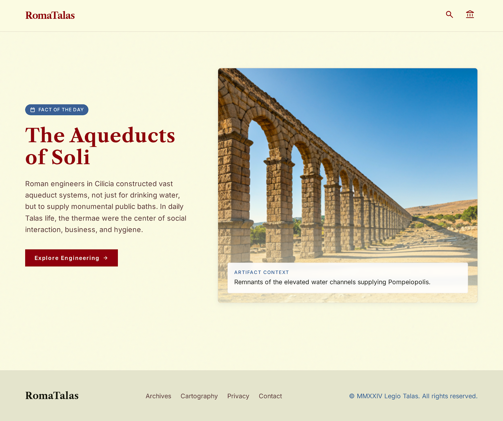

calendar_today
Fact of the Day
The Aqueducts of Soli
Roman engineers in Cilicia constructed vast aqueduct systems, not just for drinking water, but to supply monumental public baths. In daily Talas life, the thermae were the social heart of the community, where citizens gathered not merely to bathe, but to conduct business, exercise, and participate in civic life.

Artifact Context
Remnants of the elevated water channels supplying Pompeiopolis.